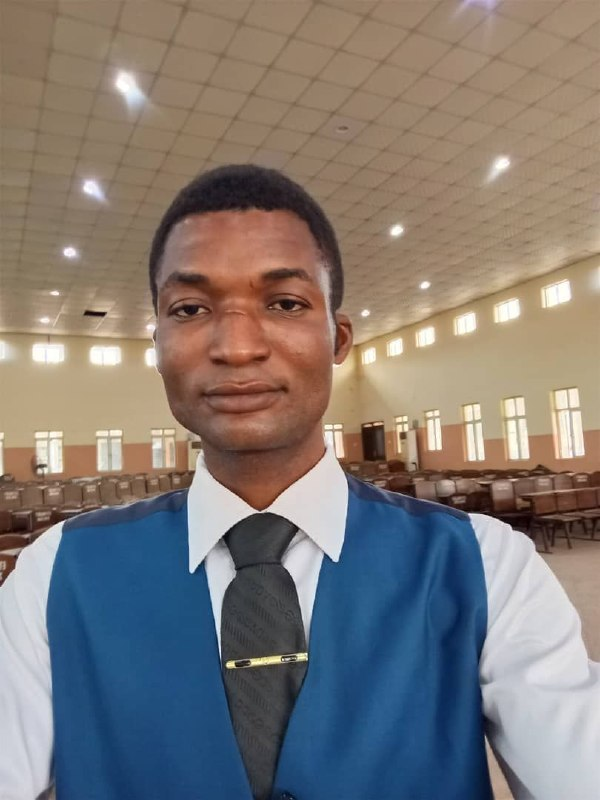
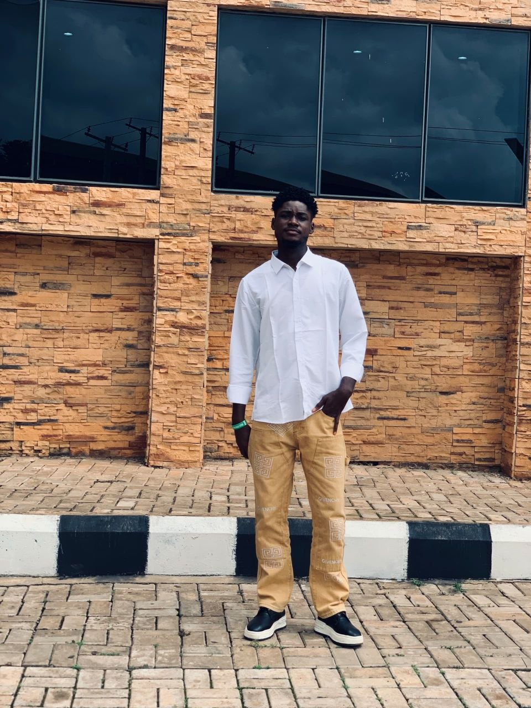
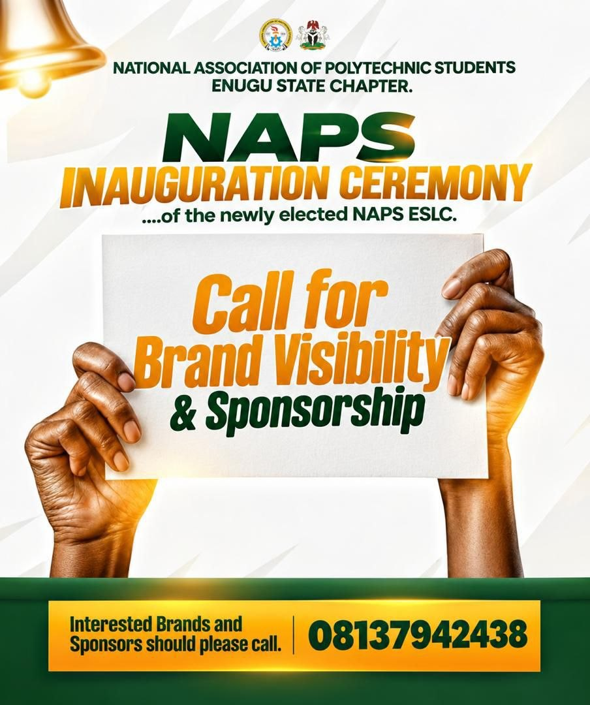
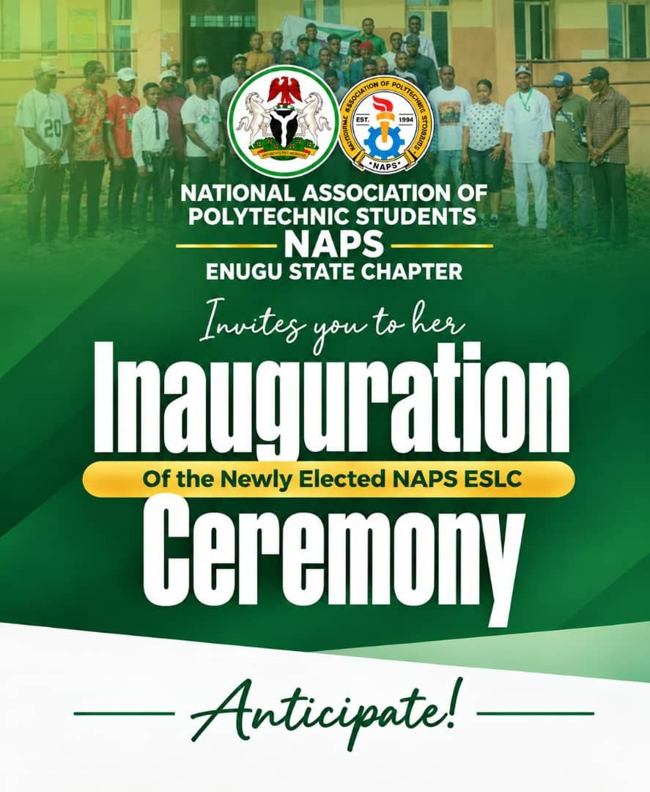
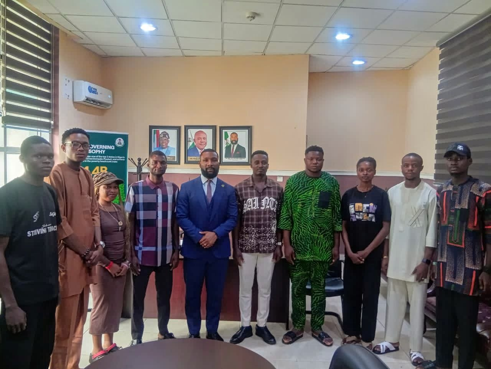
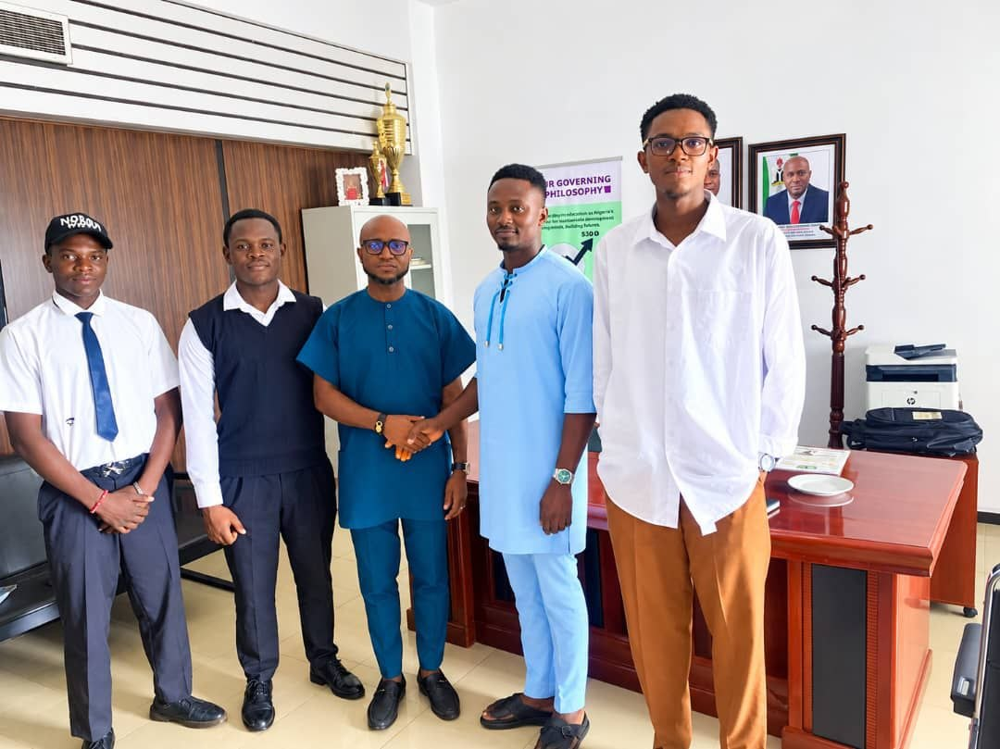
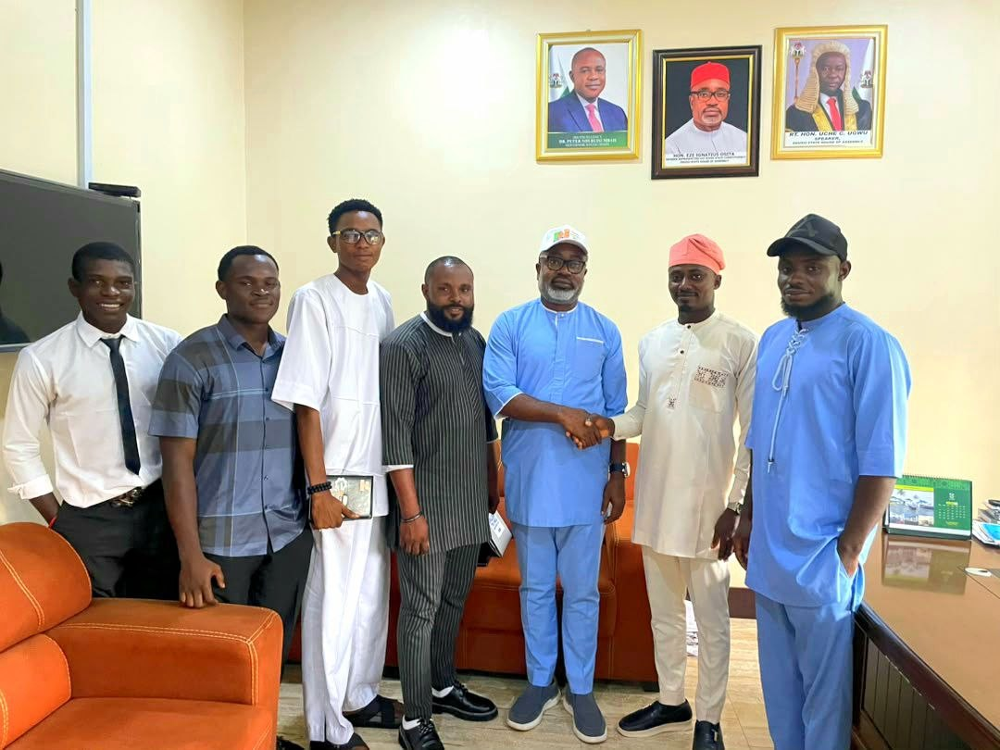

Unity
Building stronger relationships among students and leaders.
OFFICIAL CHAPTER PLATFORM
Promoting student leadership, unity, collaboration and development across Enugu State.
Discover NAPS Meet Our ExecutivesWHO WE ARE
The National Association of Polytechnic Students (NAPS), Enugu State Chapter, provides a platform for student representation, leadership development, collaboration and engagement on issues affecting polytechnic students.
Building stronger relationships among students and leaders.
Encouraging responsible leadership and representation.
Supporting student empowerment and educational opportunities.
OUR LEADERSHIP
State Chairman
Vice Chairman

Secretary General

Assistant Secretary General

Public Relations Officer & Director of Socials

Treasurer

Director of Socials

Director of Welfare

Director of Gender Affairs

Director of Entrepreneurship

Chief Security Officer
INFORMATION DESK
Publish verified reports of courtesy visits and chapter activities here.
Share approved notices, important updates and information for student leaders.
WHAT'S HAPPENING


OUR MOMENTS






Follow us on our social media platforms for the latest news, events and announcements.